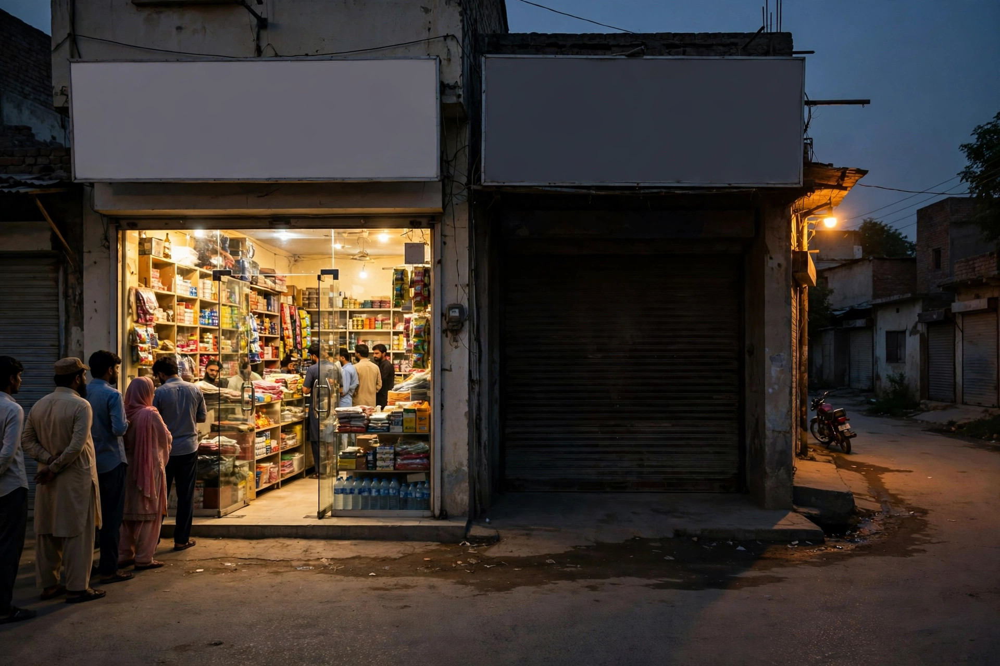

It is easy to understand why a business in Chobara might rely only on Facebook. The page is free, the owner already uses the app, and regular customers can be reached with a post. For a long time, that felt like enough. The problem is who a Facebook page cannot reach: the person who needs your service today, does not follow your page, and starts with a Google search.
A website exists for that person. It is also the one online place you fully control. This article explains the difference honestly, without dismissing Facebook, which still has a role. If you are planning a site, our SEO services for Chobara page shows how local help works. Zaheer Seo Expert is based in Layyah and serves Chobara businesses from there. There is no office in Chobara, and the work is done online and by phone, so distance is not a barrier.
Facebook Shows Posts. Google Answers Searches.
Facebook is built around a feed. Your post competes with family photos, videos and news, and it sinks within days. Someone who needs a service next month will not scroll back to find it. Google works the opposite way. A searcher states a need, and Google looks for pages that answer it. A well-structured website page can answer that same search again and again, long after it was written.
There is another practical gap. A customer without a Facebook account, or one who is logged out, often cannot see your full page. A website has no such wall. Anyone with a browser can read your services, check your location and tap your phone number. For businesses serving older customers and farmers as well as young phone users, that openness matters.

What a Simple Website Actually Does for You
A local website has a few clear jobs, and none of them require a large budget or a complicated design:
- It confirms you are real. A business with its own site, address and consistent details looks established to a first-time customer comparing options.
- It explains each service properly. Separate pages let a visitor read only what they need, instead of hunting through months of mixed Facebook posts.
- It supports your Google listing. Your Business Profile can link to the site, and consistent name, address and phone details across both strengthen trust.
- It works while you sleep. A farmer reading your page at night can note your number and call in the morning. No one needs to be online to post at that moment.
Notice what is not on that list: daily posting, fancy effects or dozens of pages. For most Chobara businesses, a handful of clear pages, written once and updated when details change, is the right size. Good content strategy and copywriting keeps those pages focused on customer questions rather than sales slogans.
The Control Problem With Relying on One Platform
A Facebook page lives under rules you do not set. Accounts get locked, pages get restricted by automated systems, and reach for business posts can fall without warning. Recovery can be slow, and some owners never regain access. If your only online presence disappears, your customers find a silent page or nothing at all.
A website under your own name does not carry that single point of failure. You can also move it, back it up and correct it whenever you choose. That does not mean deleting Facebook. It means Facebook should be a channel that points people to a home you own, not the home itself.

What to Put on the First Version
Start small and complete. A home page naming your business, your trade and Chobara. One page per main service or product group, written in your own words. An about section that honestly says where you are based and which areas you serve. A contact page with phone, location and hours. Link the site from your Google profile and your Facebook page so all three agree with each other.
Our general article on SEO for Chobara businesses shows how the website, the profile and reviews fit together as one system. Read it before you pay anyone, so you can judge whether the plan offered to you covers the basics or just sells extras.
Cost Fears and Honest Expectations
Owners often delay because they imagine a website means a large, ongoing expense and constant updating. A simple local site is mostly a one-time writing and setup effort, with small updates when your services, hours or number change. What it should never come with is a promise of instant customers. A website makes you findable and credible. Enquiries then grow as Google indexes the pages and customers share the link, which is steady progress rather than overnight change.
Be careful with anyone who offers a website bundled with guaranteed rankings or instant results. Those promises are not how search works, in Chobara or anywhere else. Judge a provider by whether the basics are explained clearly: structure, honest content, consistent details and mobile usability.
Using Facebook and a Website Together
The strongest setup for a small town business is both tools doing what each does best. Use Facebook for timely updates, photos and staying in touch with regulars. Use the website as the permanent record of your services that Google can show to new searchers. Use WhatsApp for the conversation once a customer contacts you. Each tool has a job, and none of them has to carry the whole business alone.
If you currently have only a Facebook page, adding a small website is the single step that most improves how new customers find you. It turns your reputation, which already exists in Chobara, into something a stranger searching on Google can discover and trust.
Frequently Asked Questions
If I have a Facebook page, why do I also need a website?
Facebook reaches people inside Facebook, while a website is what Google shows to searchers who do not follow you. A website also lets you organise services clearly and control your own information.
Does a small Chobara business need a big website?
No. A small, clear website with a home page, service pages and a contact page is enough for most local businesses. Clear and accurate matters more than large.
Will a website replace my Google Business Profile?
No. The profile helps nearby customers find and call you quickly, and the website explains your services in depth. They work best together and should show the same name and phone number.
Can Zaheer Seo Expert help Chobara businesses from Layyah?
Yes. Zaheer Seo Expert is based in Layyah with no office in Chobara. Website and SEO work for Chobara clients is handled online and by phone.
Want More Customers From Google?
Call 0327 7350830 or email seozaheer14@gmail.com. Zaheer Seo Expert, Layyah - Rajan Shah Road, Rana Nagar, Chak 116 TDA, Pakistan. Open 24 hours.
Get Your SEO Strategy →